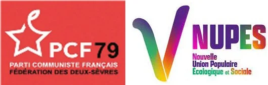

Appel de la fédération
Législatives 2022. Le PCF 79 appelle à voter pour les candidats de la NUPES
Date indiquée par Facebook · 2 juin 2022
Repères éditoriaux
Nous avons appelé à soutenir les candidats de la NUPES les 12 et 19 juin. Le texte expose les priorités que nous avons défendues, notamment la gestion démocratique de l’eau.
Texte conservé avec la publication
Le PCF en Deux-Sèvres appelle à voter massivement pour les candidat.es de la NUPES les 12 et 19 juin prochains pour de multiples raisons.
Stop aux méga bassines !
Pour le PCF, l’eau est un bien commun qui doit être géré démocratiquement par les usagers et prenant en compte les besoins des différents usages. Il défend depuis toujours un modèle agricole différent, reposant sur un réseau dense de fermes à taille humaine et une bonne rémunération du travail paysan.
En l’occurrence, dans notre département aussi, et au sein du collectif Bassines Non Merci, nous nous opposons aux méga bassines, à une privatisation de l’eau et une formidable gabegie financière, une impasse agricole, une orientation contre la nature et sa biodiversité.
Il faut donc aller sur deux fronts : empêcher de tels projets mais aussi permettre un changement de modèle. Poussons à la construction de véritables projets de territoire comprenant des exigences très fortes et les moyens de les faire respecter dans le cadre d’un service public de l’eau démocratique :
- En matière d’économies d’eau,
- En matière de qualité de l’eau,
- En matière d’alimentation, avec des productions plus saines, l’installation de productions maraîchères, de vergers, d’élevages non industriels à proximité des bassins de vie, ce qui peut et qui doit aussi être bon pour l’emploi et les revenus des producteurs/paysans.
Les changements importants que cela demande à une grande partie des agriculteurs ne doivent pas nous faire perdre de vue qu’ils sont des chef.fe.s d’entreprises dans un monde capitaliste, soumis au marché, aux banques, aux filières de l’agro-industrie extrêmement financiarisées… Le nœud du problème est là : contester les logiques capitalistes est indispensable pour que les intérêts populaires s’imposent aux choix de gestion des entreprises agricoles.
******************************************
IL EST TEMPS DE DIRE STOP à l’idéologie du tout marché qui a conduit les gouvernements à privatiser et mettre en concurrence les services publics, engendrant des carences graves du service public et toutes ces hausses de prix que nous subissons au détriment de notre pouvoir d’achat.
- L’augmentation des prix du gaz et de l’électricité, les hausses de loyer et les baisses d’APL,
- La pénurie de médecins et de professionnels de santé, le manque cruel de lits d’hôpitaux,
- L’insuffisance de places dans les EHPAD et les maisons de retraite ou encore les crèches,
- La disparition de nos services publics de proximité dans certains quartiers et communes : école, hôpital, commissariat, bureau de poste, agence des finances publiques, gare, logement social,
- Le nombre insuffisant d’enseignants, de la maternelle à l’université….
Avec les candidats de la NUPES, reprenez le pouvoir sur votre bien commun pour :
- Mettre fin à la baisse des dotations aux collectivités aujourd’hui en difficulté, pour leur permettre d’assurer leurs missions de service public, notamment en remettant en place une vraie péréquation,
- Aller vers la création de pôles publics nationaux par la création et/ou la convergence d’acteurs publics : pôle national du transport public, pôle public du médicament, service public national du logement, pôle public de l’énergie, service public de l’art, de la culture et de l’éducation populaire, etc...
- Doter les services publics existant des moyens nécessaires à leur fonctionnement avec du personnel sous statut lui garantissant l'indépendance et la responsabilité dans ses fonctions.
- Aller vers le 100 % Sécurité sociale et revenir sur les exonérations de cotisations patronales,
- Garantir l’égalité salariale femme/homme, engager une politique ambitieuse en matière d’emploi et de salaire.
- Mettre et utiliser l’argent public (nos impôts !) géré par l’Etat et les collectivités territoriales et les cotisations sociales géré par la Sécurité sociale, au service d’un tout nouveau développement des services publics.
Cet argent doit cesser d’inonder les “cabinets de conseil” dont Mac Kinsey et le patronat d’aides, dont les effets pervers sont démontrés.
Pour toutes ces raisons, le PCF en Deux-Sèvres appelle à voter massivement pour les candidat.es de la NUPES les 12 et 19 juin prochains.

Sources
Archive rouge · export Facebook · AR-0002-FB-01880
À lire aussi · Législatives 2022. Notre déclaration au lancement de campagne de la NUPES